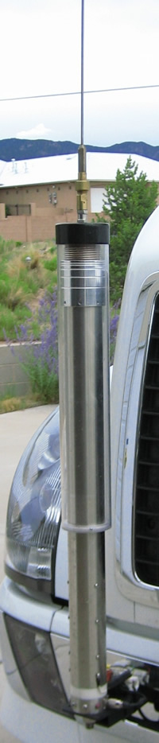

OTR Trucks
Last Modified:
August 17, 2010
Contents: Basics; Ground Plane Issues; Antennas; Unique Electrical Problems; Power Inverters; Transceivers; Amplifiers; Safety Issues; Conclusion;
The drivers of over the road (OTR) trucks (tractors), and the trailers they pull, literally keep America rolling. More and more of these dedicated drivers are utilizing amateur radio as a means of whiling away the boredom, and keeping in touch with friends.
Compared to a standard sedan, these giants of the road have enough extra cabin space to mount just about any radio you can name. They usually have enough reserve electrical power to run a mobile amplifier without any worries. Nonetheless, they present a unique case when it comes to mobile operation.
Their bodies are made from fiberglass, polymer plastics, and even carbon fiber. These body shells, cabins actually, are mounted atop of a very strong frame, and isolated from it to make driving as comfortable and noise free as possible. In fact, some are so plush even the Queen of England would feel at home. Creature comforts aside, OTR trucks are unique when it comes to mobile radio operation. There are several reasons why this is so.
☜Return☜
The most important part of any mobile operation is the antenna system. In other words, the antenna and the ground plane it is mounted over. Fiberglass, polymer plastics, and carbon fiber are not the stuff ground planes are made of.
On most OTR models, the hood and fenders are hinged just behind the front bumper negating that as a mounting area. Fairing and other streamlining body panels shorten the list. Mounting behind the cabin is out too because of the interaction caused by the mass of the trailer being pulled.
These facts cause most OTR drivers to resort to using the mirror mounts; no doubt the worst place in terms of ground plane losses. No amount of ground straps will negate this premise, even though some operators will disagree.
 One of the slickest installs I've seen to date, belongs to Peter Naumburg, K5HAB. His antenna is mounted on a front frame extension of a Volvo-based Renegade, in place of the right-side tow hook. While mounted lower than he would like, it's about the only location available. It allows the whip to be full length, which increases efficiency.
One of the slickest installs I've seen to date, belongs to Peter Naumburg, K5HAB. His antenna is mounted on a front frame extension of a Volvo-based Renegade, in place of the right-side tow hook. While mounted lower than he would like, it's about the only location available. It allows the whip to be full length, which increases efficiency.
The right photo is a close up of the matching coil and requisite chokes. The transceiver is an IC-7000, driving an SG500 amplifier. A BetterRF Screwdriver control handles the tuning chores. There are additional photos here.
Another place you almost never see antennas mounted is atop the fuel tank foot rail. Although on some models the streamline fairing covers the tanks, it is nonetheless the largest metal mass one can easily mount an antenna over on some OTR tractors. The use of side brackets, similar to those used with trailer hitch mounts on passenger vehicles, are not the solution if efficiency is the byword.
As a side light; mounting a mobile antenna over an inadequate ground plane not only reduces efficiency, it causes common mode currents to flow on the outside of the coax. This fact results in RFI problems that are not easily fixed.
☜Return☜

The best antenna you can buy most likely will shake itself apart if you don't mount it securely. Cheap ones will fail even if you do, so here are a few things to keep in mind.
So called screwdriver antennas come is every shape and size. The majority of them are remotely controlled which is their biggest draw. Some folks think the bigger they are the better they work, which is not always the case. Anything smaller than a 2.5 inch one, or larger than 5 inch aren't worth the effort. If you want to know why, read my Antennas, Commercial article.
Almost universally, they suffer reduced stability and sturdiness when the coil is fully extended (75/80 meter operation). What's more, most grow about a foot in length on 80 meters compared to 10 meters. If you're maximizing your efficiency with a long whip, 80 meter operation may put you past the 13.5 foot limit. This usually isn't a big problem with a standard sedan, but OTR trucks are scrutinized much more closely. One solution is to use a cap hat which I cover in the aforementioned article.
Auto-coupler/whip combinations require very good ground planes. This is extra tough to do on an OTR truck as pointed out previously. Remember too, the RF voltage developed is VERY high (10 to 15 kv), so care must be taken to keep the radiator (whip) away from any body work even if it is plastic. Failure to do so can result in a fire!
A lot of truckers opt for monoband antennas which is fine. Stopping for a "tire check" is an opportunity to change coils. You could also opt for a spider bracket which allows multiple coils to be attached to the mast allowing for a rapid QSY. There are a couple of caveats to remember.
If you choose a Hustler, do not buy the folder over mast as the hinge is its weakest point. The next weakest point are the threads at the bottom of the coil. Over tightening them only exacerbates the problem, especially if you're using the big coils. Speaking of which, the big coils are actually lossier than the little ones primarily due to the large end caps. Lastly, all of the Hustler line suffers from moisture incursion under the vinyl sheath. Because of these issues, you might want to think twice about using them on an OTR tractor.
The rash of import antennas, with their exaggerated gain and efficiency specs, aren't much more than fodder for the uninformed. Here are two things to ponder. First, if there is a power rating, buy something else, as this is a sure sign the antenna isn't what it should be. Secondly, if their gain figures (VHF and UHF) are listed without a descriptor (dBi or dBd), you can bet they're factious.
☜Return☜
Unique Electrical Problems
As I stated above, OTR tractors seldom have a shortage of electrical power. The smallest of OEM alternators are typically rated at 150 amps, and sometimes are large as 350 amps! Most are a nominal 12 volts (13.8 VDC), but some use 24 volt systems. There are often multiple batteries with enough extra capacity for any use an amateur might put them through. However, they have an Achilles heel.
Because the bodies are not steel, there is a myriad of ground straps and ground conductors throughout the tractor's wiring harnesses. Their requisite long lengths allow an inordinate amount of RF energy to ingress the wiring. This fact requires attention to detail when installing equipment into them.
Direct (and short) power runs to the main battery wiring are very important, even if ancillary power points are provided. Keep in mind, the best way to minimize RFI ingress is to keep the impedance of DC wiring as low as you can. Here's why.
Any suppression technique you use to control AFI, RFI, or EMI, must have an impedance of at least a magnitude less than that of the circuit you're trying to suppress. This is very difficult to achieve in a DC power supply circuit by any normal means. Thus, you should endeavor to keep the initial impedance as low as you can. Therefore, direct to battery, DC wiring is the only recourse.
I've mentioned this elsewhere on this web site, but it needs to be repeated here as the original anecdotal suggestion came from another web site dedicated to OTR operation. To wit: Twisting the power cord with an electric drill (or other means) in an effort to control alternator whine is both inane and ill-advised. Where this "solution" came from is anyone's guess. If you believe it works, reread the previous paragraph, and read my Wiring and Alternator articles.
There is another issue that long DC ground leads exacerbate, and that is RFI egress. Since most OTR tractors are diesel, and modern emission standards are here to stay, OEMs have resorted in using electronic shuttle systems in place of the older mechanical ones. This makes diesel engines just as RF noisy as their gasoline counterparts. Add the fact the bodies are nonmetallic, and you can have a potential RFI nightmare. The solution is the application of a liberal amount of split beads on the offending (and offended) devices.
Neatness counts when doing any kind of wiring. Running wires hither and yon, or bundling them up with tyraps and tape, is a prescription for both short and long term problems. If a cable is too long, cut it off.
☜Return☜
Power Inverters
Probably the most bothersome of RFI issues, are those caused by solid state, DC to AC power inverters. There are two major types; Modified sine wave (MSW), and pure sine wave(PSW). There is an excellent review article in the April 2009 issue of QST, which describes how they work. As noted in the article, MSW inverters are prone to generating RFI. While less expensive than PSW units, their extra cost is easy to justify when weighed against the cost of filtering out the RFI; a nearly impossible task!
☜Return☜
 Miniaturized mobile radios are all the rage, but can be distracting for a lot of reasons. If you have the physical room, there are several larger transceivers that may be a better choice. The Icom IC-718g, the Kenwood TS-480, and the TenTec Jupiter are good examples. Except for the Kenwood, they were not designed for mobile use. Thus, fabricating mobile mounting brackets can be a problem, but their large buttons and displays may be just the ticket even though they do not have VHF capabilities.
Miniaturized mobile radios are all the rage, but can be distracting for a lot of reasons. If you have the physical room, there are several larger transceivers that may be a better choice. The Icom IC-718g, the Kenwood TS-480, and the TenTec Jupiter are good examples. Except for the Kenwood, they were not designed for mobile use. Thus, fabricating mobile mounting brackets can be a problem, but their large buttons and displays may be just the ticket even though they do not have VHF capabilities.
Speaking of mounting brackets. Gamber-Johnson makes some of the best mobile mounts money can buy. Several of their pedestal mounts are specifically designed for OTR use, and when equipped with universal mounting plates, just about any need can be satisfied. A few more details are included here.
☜Return☜
If you want to know what's available new and used, you should read the Amplifier article. Using one in an OTR truck isn't any different than installing one in a sedan, if you follow the basic rules. It's finding a convenient place to mount it that isn't always easy. Most drivers mount theirs under the sleeper bunk, which is fine as long as there's adequate ventilation. Remember, a 500 watt, solid state amplifier will input about 1,000 watts. In other words, it's like hanging a 200 watt (nominal average) heat lamp under your bunk!
If you want to minimize the chances of RFI ingress, the cabling between the amplifier and the radio should be shielded. Those supplied with the Ameritron ALS-500M are not. Using shielded CAT 5 cable is not a cure without going to a lot of trouble to ground the shield. Another good suggestion is to mount your transceiver's main body next to any amplifier you use. Again, the body isn't steel and RFI ingress can be a problem.
One solution is to use an RF keyed amplifier from Tokyo High Power or SGC. The THP may be cabled to an Icom or Yaesu for PTT and automatic band selection (the supplied cable IS shielded), and the SGC can be set for full manual or full automatic PTT and/or band selection. Incidentally, both of these amplifiers are fully fault protected.
While amplifiers can make a big difference, if the remainder of your installation isn't up to snuff, the extra RF can play havoc with on-board electronics. In other words, correct your antenna deficiencies before deciding on an amplifier. Fact is, in most cases, proper antenna selection and mounting can achieve more overall gain than an amplifier will deliver. In other words, antenna gain (or loss in the case of an HF mobile antenna) are reciprocal. If it's 5% efficient on transmit, it's 5% efficient on receive. Although you can make up some of the receive losses with front end gain, the signal-to-noise ratio isn't any better. Keep in mind, if you can hear them it doesn't make any difference how much output power you have, you're not going to be able to carry on a QSO.
Lastly, do yourself a favor and shy away from cheap amplifiers, especially those without any output filtering. Remember, it is you who are responsible for the spurious signals, not the folks who built the amplifier in the first place.
☜Return☜
Safety Issues
Almost every CB radio I have seen installed in an OTR truck is mounted near the headliner, with the microphone cord dangling in the driver's face! This is an unsafe practice. What's more, most tractors are equipped with standard transmissions, many of which are crash boxes (no synchronizers), and require extra attention. The last thing a driver needs is another distraction.
Distraction is the number one cause of vehicle crashes. From the latest studies, distraction from using cellphones and other telemetric devices are the most prevalent form. It should go without saying, the potential costs in lives and property are much higher for 18 wheelers than 4 wheelers. Think about this when you're looking for a convenient place to mount your transceiver. Remember too, your truck is your livelihood; protect it!
☜Return☜
There is one area of OTR operation that can have a big impact on how and where you mount your radios and antennas. And that is, ownership.
Some companies will not allow any radio equipment (but their own) to be installed. Distraction, illegal (out of band) CB operation, property damage issues, and other causes have put the proverbial kibosh on some OTR amateur radio activity. If this is your case, you have my sympathy. If it isn't, but you still have restrictions on installing radios, here are a few suggestions.
I have driven five company vehicles, all of which had amateur transceivers and antennas permanently installed (holes drilled in the body work). I ask first by explaining my reasoning. No one ever turned me down. I did my utmost to insure the installation was neat and tidy. I even received an award from one of my employers for the cleanest company car. What's more, one of my bosses became an amateur as a result. This proves neatness counts!
A few companies allow amateur radio equipment, but nothing can be permanently installed. Quite obviously, the resulting installation is always an even greater compromise. In these cases, even though the efficiency isn't very good, an auto coupler/whip antenna may be your best bet. I've seen vice-grip mounted antennas clamped on about every metal surface imaginable. If you resort to mounting even a CB whip like this, make it as secure as you can. And make sure your radio is also secure.
Although I possess a lot of wanderlust, driving an OTR truck was never my life's desire, but I did drive a milk truck for a few months. Radios were not allowed except for the AM radio installed in the dash. So, I used a handy talkie. Not the best, but better than none. The experience played a big factor in my decision to change careers. Think about it.
☜Return☜
{kind=link}